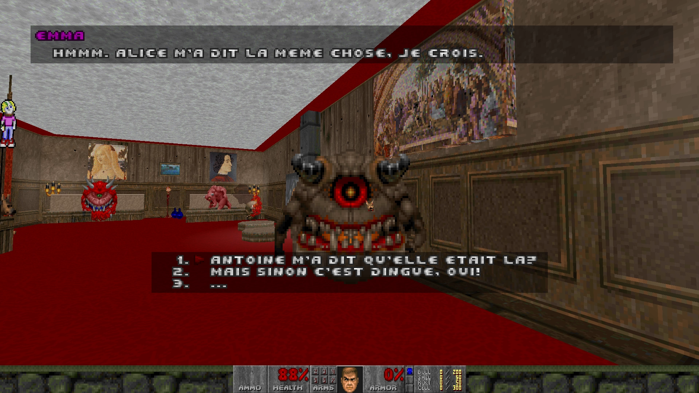

← Back
Scary Party
#DoomBuilder #Dialogue #FPS
Gen-Z demons do not get what is so great about the never-ending battle against humanity. Instead of joining the ranks, they are throwing illegal parties.
Chat, do drugs, enjoy the music and stay alive. A short narrative party experience built with Ultimate Doom Builder.
.WAD file available here.
